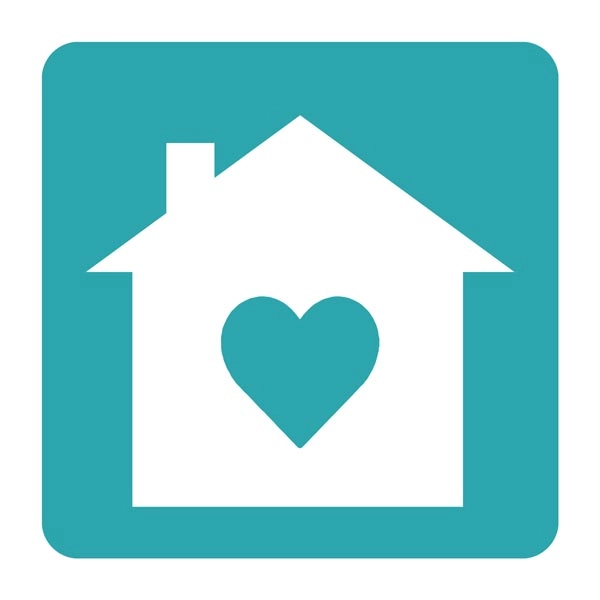
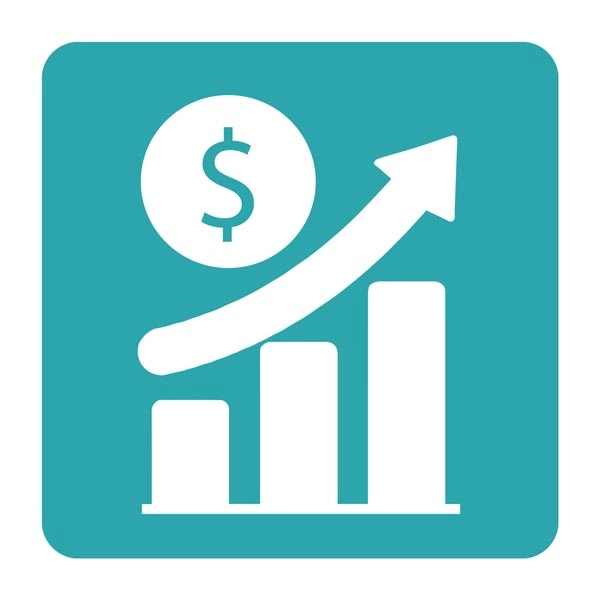
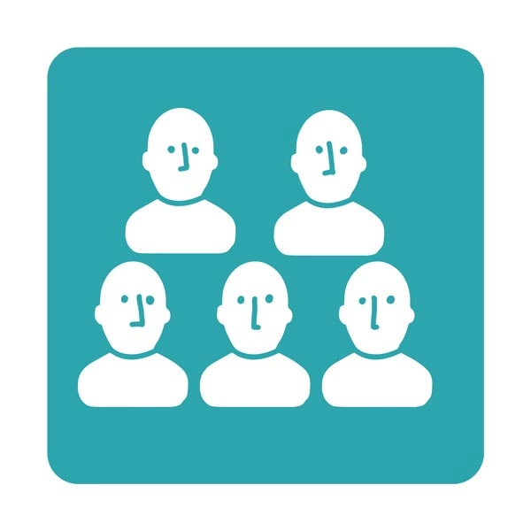
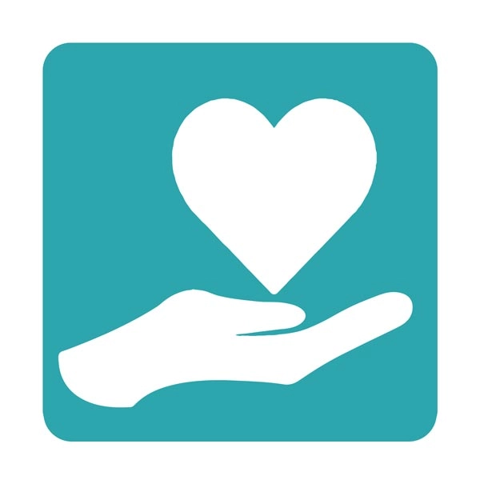
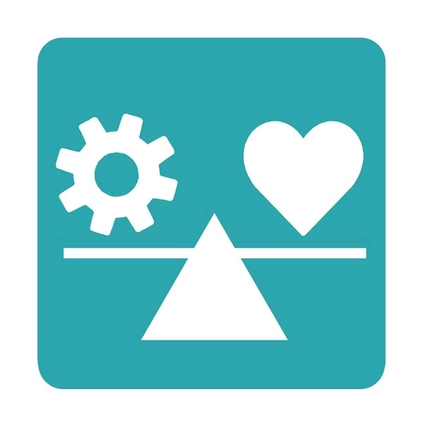

Calidad de vida
De acuerdo con la OMS el bienestar se entiende como un estado positivo que experimentan las personas y las sociedades. El bienestar abarca la calidad de vida, así como la capacidad de las personas y las sociedades para contribuir al mundo de acuerdo con un sentido de significado y propósito. Centrarse en el bienestar ayuda a dar seguimiento a la distribución equitativa de los recursos, al desarrollo integral y a la sostenibilidad. El bienestar de una sociedad puede observarse en la medida en que es resiliente, desarrolla capacidades para la acción y está preparada para superar los desafíos (World Health Organization, 2021).
Algunas agencias internacionales se han dado a la tarea de tratar de medir el bienestar, como la Organización para la Cooperación y el Desarrollo Económicos (OCDE). La OCDE es una organización internacional dedicada a reunir países para diseñar políticas que mejoren el bienestar económico y social.
La OCDE desarrolló el Índice para una Vida Mejor compuesto de 11 indicadores que ayudan a estimar el bienestar de las personas que viven en los países miembro, incluido México. El bienestar actual se refiere a cómo viven las personas aquí y ahora. Incluye cosas como las condiciones materiales (por ejemplo, si una familia tiene lo necesario para vivir), los factores que influyen en la calidad de vida, como la salud, la seguridad, lo que una persona aprende y sabe, y el entorno en el que vive. También considera las relaciones con otras personas, es decir, qué tan conectado te sientes con tu comunidad, si participas, y cómo compartes tu tiempo con amigos, familia u otras personas.
Vivir bien es mucho más que solo "estar sano" o "tener dinero"; es un equilibrio entre piezas que encajan para que puedas disfrutar la vida. Los indicadores del Índice para una Vida Mejor resumen los principales factores de bienestar, incluyendo aquellos relacionados a la calidad de vida: salud, conocimientos y habilidades, calidad del medio ambiente, bienestar subjetivo y seguridad.

Vivienda
Se refiere a tener un lugar seguro y adecuado para vivir, con espacio suficiente y condiciones que permitan sentirse cómodo y protegido.

Ingresos
Tiene que ver con el dinero y los recursos que tiene una familia para cubrir necesidades básicas, como comida, transporte, educación y actividades recreativas.

Comunidad
Significa contar con personas que te apoyen, como familia, amistades o vecinos, y sentir que perteneces a un grupo donde puedes confiar en los demás.
Empleo y trabajo
Se relaciona con la posibilidad de tener un trabajo digno en el futuro, con ingresos justos, estabilidad y condiciones que no afecten la salud ni el bienestar.
Educación y habilidades
Incluye el acceso a una buena educación y el desarrollo de conocimientos y habilidades que ayuden a aprender, crecer y alcanzar metas personales y profesionales.
Medio ambiente
Se refiere a vivir en un entorno limpio y saludable, con aire y agua de buena calidad, que permita cuidar la salud y el planeta.
Seguridad
Se relaciona con vivir sin miedo, sentirse seguro en la escuela, en casa y en la calle, y estar protegido de la violencia.
Compromiso cívico y gobernanza
Tiene que ver con participar en la sociedad, expresar opiniones, sentirse escuchado y confiar en que las instituciones toman decisiones justas.
Salud
Incluye sentirse bien física y mentalmente, tener energía para las actividades diarias y acceso a servicios que ayuden a cuidar el cuerpo y la mente.

Bienestar subjetivo
Es cómo una persona evalúa su propia vida: si se siente feliz, satisfecha y con sentido en lo que hace.

Equilibrio entre la vida y el trabajo
Significa tener tiempo para estudiar, descansar, convivir con otras personas y hacer lo que te gusta, sin sentirte siempre presionado.
Ejercicio
Explora el Índice para una Vida Mejor de la OCDE y revisa el lugar que ocupa México con respecto a los demás países miembro de la OCDE por indicador de calidad de vida.
Aclaración: Los resultados refieren solo a los países miembro de la OCDE, no son tendencias mundiales. Posiblemente hay países que ofrecen mejores o peores condiciones de calidad de vida, pero no participaron en esta evaluación. Los resultados son dinámicos. De todos estos indicadores: salud, conocimientos y habilidades, calidad ambiental, bienestar subjetivo y seguridad son los que en su conjunto se ocupan para estimar la calidad de vida de las personas.